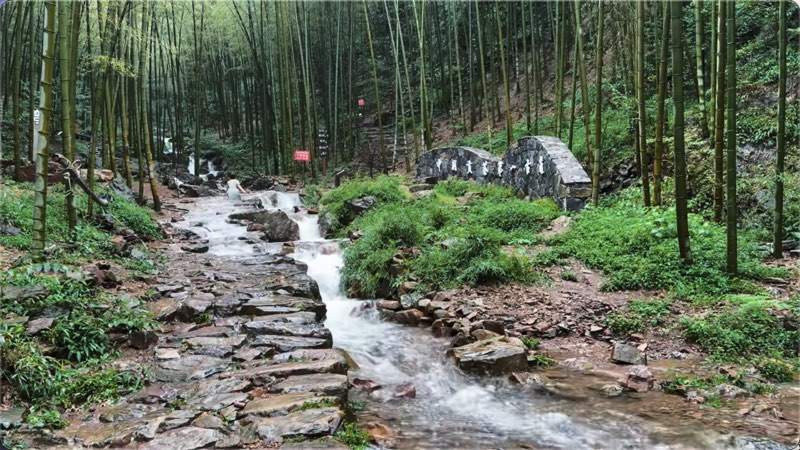
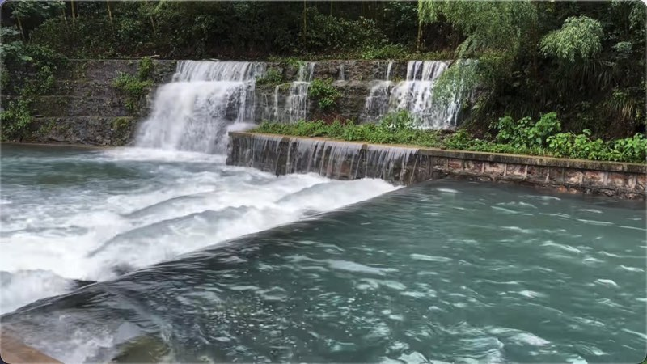
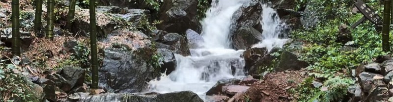
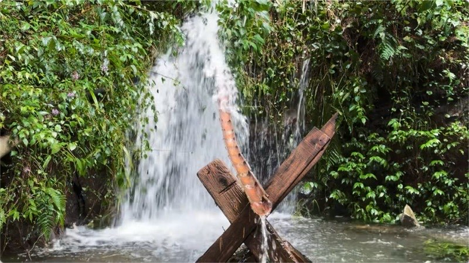
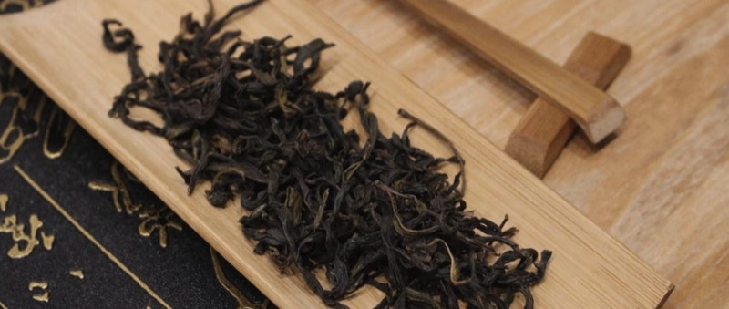
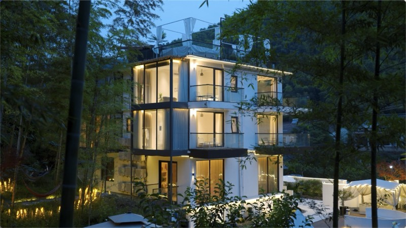

主 线
灾后恢复提信心 · 贡茶古道树 IP · 文旅服务促发展
一条贡茶古道，半部阳羡茶史；
一位琴人留韵，邵坞山水传音；
这里，是江苏唯一的贡茶史源头。
邵东村位于宜兴市湖㳇镇，地处阳羡生态旅游度假区腹地，苏浙两省交界、三面环山，是典型的江南丘陵山村。2001 年由原东岭、邵坞两村合并而成，村中竹海成片、溪涧纵横，坐拥阳羡茶千年文脉，也承载着当代乡村振兴的探索。
一道弯一道弯的青石古道，是古代茶马运输的进贡通道，也是今日的网红徒步线。北侧连江苏宜兴是“阳羡雪芽”产地，南端接浙江长兴是"紫笋茶"产地。
当年常州、湖州两府议定贡茶的草亭遗址，2016 年重建，今立于廿三湾山顶，可俯瞰两省山色，是贡茶故事的"历史坐标"。
坐落于山间的古刹，与项羽翻越长岗岭的传说相邻，登山途中可访古、可静心，是"古道+古刹"徒步体验的重要一环。
成公亮（1940—2015），宜兴丁山人，当代古琴大师、广陵派传人、南京艺术学院教授，国家级非遗古琴艺术代表性传承人，是当代极少数同时集「演奏家、打谱家、古琴原创作曲家、琴学著述者」于一身的宗师。代表作：古琴作品辑“袍修罗兰”，包含八首原创传世之作。
2000 年盛夏，他长住邵东村邵坞片区，写下了万字系列散文《走进邵坞》，把山村傍晚的炊烟与人声，听成"一首远古的琴曲"。
白天走贡茶古道，傍晚听千年琴声。一位琴人，一段往事，让邵东村与古琴艺术、与一种人文山水精神，从此有了一段温柔的羁绊。
相传项羽兵败后翻越长岗岭，留下"霸王潭""无梢竹"等遗迹与"霸王归天"的蚂蚁字传说，为古道添上一层英雄史诗的色彩。
廿三湾山顶天官庙，康熙年间赐名"赐福寺"，屡毁屡修；1996 年重修，恢复"路茶"传统，三教相融而香火复旺。
由村民集体自建水电而来，曾被电影《火红的年代》取景；如今是夏季网红嬉水地，也是村落"自力更生"精神的具象符号。
明正德年间应氏三兄弟自外地北迁定居，2001 年原东岭、邵坞两村合并为今邵东村；邵家段自然村已列入江苏省传统村落名录。

登廿三道弯，走贡茶古道，访赐福寺、憩境会亭，是邵东村最具辨识度的徒步路线之一。

蜿蜒的永红涧，山谷清幽，清凉嬉水，溯溪爱好者的天堂。

清冽的山泉水——数百年来村民们的饮用水，2018年检测列为优质储备水源，特地前来取水泡茶者络绎不绝。
竹海深处天然氧吧，雨季负氧离子浓度每立方厘米高达十万个，深度洗肺，把山里的清新带回家。

山中的天然好水，清冽甘甜，村民世代饮用，2018年检测列为优质储备水源，泡茶煮饭皆相宜，是免费的大自然馈赠。

千年贡茶文脉的延续，野山茶桩林，无肥料无农药，生态管护与茶事体验成为新的体验热点。
深山冬笋春笋制成的笋干、黄精等招牌山货，是带得走的山野美味。

原生态村落中，点缀着几家轻奢民宿，让你慢下来、坐下来，在山乡夜色中享受舒适一夜。
视频拍摄于2026年八月初，感谢“吉利姑姑”提供视频素材，如果喜欢该视频请关注视频号“吉利姑姑”。
借灾后修复连通廿三湾步道断点、增设古道标识与境会亭解说牌；同步开展文化资源普查建档，采访亲历者留存口述史，让"传说"与"史实"相得益彰。
2026 - 2027年推出"重走廿三湾"示范徒步线，策划举办"琴声里的廿三湾"春茶琴会；落地 2—3 户民宿示范户，让贡茶古道与成公亮 IP 真正可体验。
2027 - 2028年引入专业运营主体，注册"廿三湾"伴手礼品牌，推动节事常态化；借邵家段传统村落基础启动名村提升与申报，让文化 IP 成为村发展的魂。
长期持续